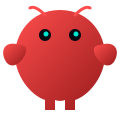

Agentes con Claude y tool use corriendo 24/7, como Sudaka sobre OpenClaw: memoria contextual, integración con Google Workspace y GitHub, y acciones sensibles con aprobación explícita.
AI Solutions Developer
Automatización, datos e IA para operaciones reales.
Construyo agentes de IA que corren 24/7, aplicaciones de reportería desplegadas en Vercel y pipelines automatizados que sostienen la operación diaria de campañas comerciales y contact center en Latinoamérica.
Herramientas y plataformas
Stack operativo para reporting, automatización, IA conversacional, integraciones Google y despliegues productivos.
 Python
Python Claude
Claude
OpenClawOpenAI
 React
React Vite
Vite Node.js
Node.js Flask
Flask Streamlit
Streamlit D3
D3 Plotly
Plotly Supabase
Supabase Google Cloud
Google CloudOracle Cloud
 Vercel
Vercel GitHub Actions
GitHub Actions Google Ads
Google Ads Meta Ads
Meta Ads Google Sheets
Google SheetsBMBotmaker
Cuentas de servicio, permisos controlados, Sheets, Drive, Cloud Run y dependencias de dominio para automatizaciones productivas.
Extracción, normalización y lectura diaria de Google Ads y Meta: inversión, ventas, CPV, proyecciones y reportes ejecutivos accionables.
Mapa de perfiles GitHub
Uso dos perfiles con objetivos distintos: uno público para mostrar proyectos abiertos y otro developer para explicar trabajo técnico real, incluyendo repositorios privados sin exponer información sensible.
Perfil público
nicodiax22
Es la puerta de entrada simple para recruiters y personas que quieren ver repositorios navegables, demos y una lectura rápida de mi perfil.
- Repositorios públicos con datos ficticios o datasets abiertos.
- Proyectos de BI, Power BI, Streamlit, Python y análisis.
- Portfolio público con foco en lectura rápida y links claros.
Perfil developer
nicolasdiaz-dev
Es el perfil donde resumo el trabajo de desarrollo más fuerte: agentes, dashboards, automatizaciones e integraciones productivas.
- Repositorios privados descriptos a nivel de producto, arquitectura y stack.
- Casos reales de IA aplicada a operaciones, reporting y contact center.
- Presentación profesional orientada a impacto, criterio técnico y seguridad.
Lectura para recruiting
La idea es que un recruiter entienda rápido que no son demos aisladas: hay problemas reales, stack concreto, despliegues, seguridad y resultados operativos.
Impacto: automatización, menos tareas manuales y mejor seguimiento.
Stack: Python, React, GCP, OCI, Supabase, APIs y GitHub Actions.
Criterio: privacidad, aprobaciones, datos sanitizados y repos privados cuidados.
Proyectos
Casos reales de mi GitHub, presentados sin exponer datos internos, credenciales ni información sensible. Los marcados En producción o con workflow corren hoy sobre la operación; los marcados funcional · no productivo están construidos y probados, pero no llegaron a operar.
Sudaka — Asistente operativo sobre OpenClaw
Agente de IA construido sobre OpenClaw y desplegado en Oracle Cloud ARM, corriendo 24/7. Se opera por Telegram y trabaja sobre la operación real: prepara reportes, consulta el estado de campañas, cruza información de Gmail, Calendar, Drive y GitHub, y ejecuta flujos controlados con aprobación explícita.
Telegram → OpenClaw (Oracle Cloud ARM) → Gmail · Calendar · Drive · GitHub · Sheets
- Memoria contextual persistente y skills que se cargan según la tarea.
- Acciones sensibles con aprobación de dos factores y registro de auditoría.
- Acceso administrado vía OCI Bastion, sin puertos expuestos a internet.
Synapse — Consola privada de repositorios
Mi punto de entrada único a todo el trabajo: desde una sola ruta llego a cualquiera de mis repositorios, a su web desplegada en producción y a su historial de commits. La vista principal es una red neuronal en canvas D3 donde cada repositorio es un nodo y las conexiones muestran stack y actividad reciente.
GitHub App (permisos mínimos) → API server-side → React + D3 en Vercel
- Command palette para saltar a un repo, su deploy o sus últimos commits.
- GitHub App propia con permisos mínimos y cero secretos en el navegador.
- Login con cookie firmada y headers de seguridad (CSP, HSTS).
DirecTV Uruguay y Argentina — Reportería Hunter
Dos aplicaciones hermanas desplegadas en Vercel para el seguimiento diario del equipo comercial: leads, ventas brutas y presentismo por asesor, abiertos por canal (Inbound, Google, Facebook, Formulario y Smart), con ranking, conversión por canal y análisis de capacidad operativa.
Google Sheets → Vercel Serverless (Sheets API) → React 19 + Vite
- Login propio con cookie de sesión firmada por HMAC.
- CI en GitHub Actions con tests Vitest y smoke test de parseo de la planilla.
- Asesores identificados por código numérico para tolerar nombres inconsistentes.
App_Ads — Métricas de Google y Meta Ads
Plataforma interna para monitorear inversión, ventas y proyecciones de campañas por cliente y región: DirecTV, Prosegur, Claro, Movistar y Zaaz en 8 países de Latinoamérica.
Sheets histórico → Vercel · Flask · Streamlit → sync horaria a Supabase
- Varios frontends sobre una única fuente de datos, con React + Vite como principal.
- Funciones serverless Python en Vercel y GitHub Actions cada hora.
- Comparación de campañas, detección de desvíos y reportes accionables.
Motor de la operación
Cinco pipelines que eliminaron la descarga manual de reportes
Antes cada reporte se bajaba a mano desde su plataforma, campaña por campaña, y el ciclo se repetía cada dos horas dentro del horario de trabajo, de 9 a 21. Hoy corren solos con GitHub Actions, cada dos horas y las 24 horas: el mismo dato llega consolidado a la planilla sin que nadie toque una descarga, también de madrugada y los fines de semana. Se fue el tiempo perdido saltando entre plataformas y, sobre todo, el error manual —el reporte que se bajó con el filtro equivocado, el que quedó sin subir, el que se pisó al pegarlo.
cada 2 hs
las 24 horas, sin intervención humana
5 plataformas
Botmaker, NICE, Neotel y Drive en un solo flujo
cero descargas
ningún reporte se baja ni se pega a mano
Botmaker_auto
Extrae sesiones y métricas de la API con caché que evita reprocesar lo ya consolidado, y publica por cola en Sheets.
Botmaker APINICE_AUTO
Reportería de contact center por campaña, con acumulados del mes y control de duplicados sobre runner de Windows.
NICE inContactCRM_BOT
Automatización del CRM con Playwright: entra al sistema, navega el flujo y baja los reportes operativos sin depender de que la plataforma exponga una API.
Neotel · PlaywrightCRM_SFTP
La vía anterior, hoy corriendo como respaldo: descarga, limpia y carga los mismos reportes desde SFTP/FTP y sostiene el flujo si la automatización del CRM falla.
Neotel · SFTP/FTPSincronización Drive
Replica los archivos de reportes de Meta y Google Ads en Drive, manteniendo copias ordenadas para el resto de los pipelines.
Google Drive APIAnalíticaEn producción
Churn DirecTV
Un cierre mide una cohorte de ventas al llegar a su tercer mes: el cierre de julio evalúa lo vendido en abril. Abre el churn por campaña, skill, supervisor y asesor, más cortes transversales que no existían en la planilla —forma de pago, turno, canal y promoción— y ahí apareció el hallazgo del mes: 23,8% de churn pagando con wallet contra 6,3% con tarjeta.
DashboardEn producción
Upselling DirecTV
Seguimiento de la campaña que contacta clientes prepagos para migrarlos a plan mensual: vistas diaria, mensual y acumulada, con conversión, presentismo y ranking de asesores. Las fórmulas de tasas viven en un único módulo que importan backend y frontend, para que no haya dos definiciones de la misma métrica.
DashboardEn producción
Farmer DirecTV Argentina
Web de medición de la campaña Farmer: sigue el rendimiento de la base trabajada por el equipo comercial, con corte por asesor y por período, sobre la misma planilla que alimenta al resto de la reportería.
ReportingPedido puntual
Movistar México
Dashboard de campañas Google Ads y Facebook Ads con KPIs acumulados, proyecciones al cierre de mes, funnel de impresiones a ventas y detalle diario por cuenta. Se levanta a pedido para revisiones puntuales, no corre en tiempo real.
ReportingPedido puntual
Claro Chile
Métricas de campaña para la operación de Claro Chile: consolida el rendimiento por período en una sola vista para revisiones de gestión. Se arma a demanda cuando se pide el corte, sin ciclo automático.
ReportingPedido puntual
Reportería Supervisores
Sistema que lee datos operativos de Google Sheets, genera un reporte HTML interactivo con análisis de IA y lo envía automáticamente por Gmail a los destinatarios configurados.
ReportingPedido puntual
Reporte Desborde
Herramienta de monitoreo del comportamiento de llamadas y ventanas operativas de DirecTV Argentina, con visualización y automatización recurrente.
Agente IAFuncional · no productivo
Luna — Filtrado de leads DirecTV Uruguay
Agente de WhatsApp que recibe contactos de campañas Botmaker, los clasifica con Claude y deriva al asesor humano o descarta según corresponda. Webhook Flask con autenticación, deduplicación en Postgres y debounce, system prompt cacheado y salida por tool use a las colas de atención en Sheets. Terminado y probado de punta a punta, dimensionado para ~8-10k sesiones por mes, pero hoy no está en uso.
Agente IATerminado · pendiente de despliegue
Agente Prosegur
Agente de filtrado de leads para Prosegur montado sobre Botmaker 3.0: toma el contacto entrante, lo califica y lo enruta al equipo que corresponde, con las reglas de negocio separadas del prompt para poder ajustarlas sin tocar el código. Está terminado y probado, a la espera de pasar a operación.
Agente IAWorkflow automático
Agente de Marketing
Director de performance automatizado: recolecta datos de Meta Ads, Google Ads y atribución de ventas en Sheets, Claude escribe el análisis y genera un reporte HTML ejecutivo listo para dirección.
Agente IAMemoria del agente
RAG Sudaka
Capa de memoria RAG que alimenta a Sudaka, el agente sobre OpenClaw: indexa documentación y contexto operativo para que las respuestas salgan con el historial real de la operación y no solo con lo que entra en la ventana de contexto.
Agente IAFuncional · no productivo
Azul — Agente de ventas WhatsApp
Agente de primera atención para el canal de ventas de DirecTV Perú: detecta si escribe un prospecto o un cliente, lo califica y lo deriva al equipo correcto. Construido y probado de punta a punta, pero no llegó a pasar a operación productiva.
ClienteEntregado al cliente
SaaS de préstamos personales
Plataforma para la gestión de préstamos personales: alta de solicitudes, seguimiento del estado de cada legajo y control de la cartera desde una sola vista, pensada para que el cliente opere sin planillas paralelas.
ClienteEntregado al cliente
Gestión para kiosco
Sistema de gestión para un comercio minorista: control de stock, registro de ventas y seguimiento del movimiento diario, con una interfaz pensada para usarse rápido en el mostrador.
ColaboraciónAporte en rama
HIT SaaS — AuditPro
Herramienta de auditoría para control de calidad: registra las evaluaciones, consolida los resultados por período y deja el historial disponible para revisión. Participé como desarrollador sobre una rama propia del proyecto; el producto es de su owner, que después lo comercializó desde otra cuenta.
ClienteSitio publicado
Portfolio — Acompañante terapéutica
Sitio profesional para una acompañante terapéutica: presentación de servicios, formación y canal de contacto directo, con foco en carga rápida y lectura cómoda desde el celular.
Demo públicaDemo navegable
App_Ads — demo pública
Versión pública y sanitizada de la plataforma de métricas de Google y Meta Ads, con datos ficticios: sirve para recorrer la interfaz y los cortes de campaña sin exponer ninguna cuenta real.
Demo públicaDemo navegable
Synapse — demo pública
Vitrina abierta de la consola de repositorios: reproduce la red neuronal en canvas D3 y la navegación entre nodos con un set de datos de ejemplo, sin conexión a la GitHub App ni a repositorios reales.
Demo públicaDemo navegable
Campaign Report Demo
Demo de reporte de campaña pensada para mostrar el formato de salida de la reportería comercial: mismos cortes y misma lectura que la versión productiva, con datos inventados.
Demo públicaDemo navegable
AI Ops Dashboard
Tablero de demostración sobre operaciones asistidas por IA: concentra estado de procesos, alertas y volumen en una sola vista para mostrar cómo se monitorea una operación automatizada.
Demo públicaDemo navegable
AI Report Studio
Prueba de concepto de generación de reportes asistida por IA: a partir de un set de datos arma la narrativa y las visualizaciones del informe, para mostrar el patrón que después se aplica en los reportes productivos.
Demo públicaPortfolio BI
Portfolio Power BI
Colección de tableros de Power BI sobre datasets abiertos: modelado, medidas DAX y diseño de informe, la base de análisis y visualización sobre la que después se apoyan los dashboards a medida.
HerramientaEn producción
Portfolio y presentación de Sudaka
Este mismo sitio: portfolio en GitHub Pages más la presentación pública de Sudaka, con su política de privacidad y el detalle de integraciones y aprobaciones del agente.
Presencia regional
Los dashboards y pipelines que construyo procesan campañas que operan en seis países de Latinoamérica, con sites propios en Argentina, Perú y Colombia.
0
países de la región
donde corren las campañas
donde corren las campañas
Campañas que reporto
DirecTV
Movistar
Claro
Prosegur
Payway
Prisma
Zaaz Perú
Cada campaña suma sus propias cuentas de Ads, colas de contact center y planillas de seguimiento. Consolidar todo eso en una sola lectura diaria es el trabajo que automatizan estos proyectos.
Cómo construyo soluciones
Trabajo sobre problemas operativos concretos, conectando datos, APIs y usuarios finales en flujos que puedan mantenerse en producción.
01 · Fuente
Sheets, Drive, service accounts, APIs, FTP/SFTP, Botmaker, Ads, Meta, OpenClaw o plataformas internas.
02 · Proceso
Limpieza, normalización, caché, validaciones, deduplicación y control de calidad de los datos.
03 · Producto
Dashboard, agente de IA, reporte automático, alerta o flujo operativo listo para usar.
04 · Operación
Deploy en Vercel u Oracle Cloud, workflows en GitHub Actions, logs, aprobaciones y mejora continua.
Ejemplos de código
Snippets sanitizados de patrones que uso en proyectos reales: cuentas de servicio de Google, lectura diaria de Google y Meta Ads, y consultas a Supabase desde Python.
Google Sheets con service account
Python · GCPfrom google.oauth2.service_account import Credentials
from googleapiclient.discovery import build
SCOPES = ["https://www.googleapis.com/auth/spreadsheets"]
credentials = Credentials.from_service_account_file(
"credentials.json",
scopes=SCOPES,
)
sheets = build("sheets", "v4", credentials=credentials)
def append_rows(spreadsheet_id, range_name, rows):
sheets.spreadsheets().values().append(
spreadsheetId=spreadsheet_id,
range=range_name,
valueInputOption="USER_ENTERED",
body={"values": rows},
).execute()Consulta diaria de Google Ads
Ads API · KPIsdef campaign_daily_query(customer_id, start_date, end_date):
query = f"""
SELECT
campaign.name,
segments.date,
metrics.cost_micros,
metrics.conversions,
metrics.clicks
FROM campaign
WHERE segments.date BETWEEN '{start_date}' AND '{end_date}'
"""
return google_ads_service.search(
customer_id=customer_id,
query=query,
)Consulta diaria de Meta Ads
Graph API · KPIsdef meta_daily_insights(account_id, since, until):
url = f"{GRAPH}/act_{account_id}/insights"
params = {
"level": "campaign",
"time_increment": 1,
"time_range": json.dumps({"since": since, "until": until}),
"fields": "campaign_name,spend,impressions,clicks,actions",
"access_token": ACCESS_TOKEN,
}
rows = []
while url:
r = requests.get(url, params=params, timeout=60)
r.raise_for_status()
page = r.json()
rows.extend(page["data"])
# el cursor de la próxima página ya viene con todo en la URL
url = page.get("paging", {}).get("next")
params = None
return rowsInversión por campaña desde Supabase
Python · Supabaseimport os
from supabase import create_client
# La service key sólo vive en el servidor o en el runner de Actions:
# al navegador nunca baja más que la anon key, que es de sólo lectura.
supabase = create_client(
os.environ["SUPABASE_URL"],
os.environ["SUPABASE_SERVICE_KEY"],
)
def inversion_por_campania(desde, limite=50):
# metricas_por_campania es una vista que ya resuelve el group by:
# el cliente REST filtra y ordena, pero no agrega.
respuesta = (
supabase.table("metricas_por_campania")
.select("pais, campania, inversion, ventas")
.gte("fecha", desde)
.order("inversion", desc=True)
.limit(limite)
.execute()
)
return respuesta.dataExperiencia y formación
Base operativa fuerte, reconvertida hacia datos, automatización e IA aplicada a negocio.
Operaciones comerciales y contact center
AI Solutions Developer · 2025 - presente
Desarrollo de agentes de IA, dashboards, pipelines de datos, integraciones con APIs y herramientas internas para campañas comerciales y contact center en Latinoamérica.
Planificación y gestión operativa
Logística, stock y abastecimiento · 2008 - 2025
Más de 15 años en operaciones, planificación, inventario, abastecimiento, control de gestión y análisis de datos para toma de decisiones.
Data Science
Teclab · En curso
Formación técnica enfocada en datos, modelos, análisis y aplicación práctica de soluciones con impacto medible.
Data Analytics / Data Science
Coderhouse · 2024 - 2025
Formación en análisis, visualización, Python, SQL, BI y proyectos aplicados.